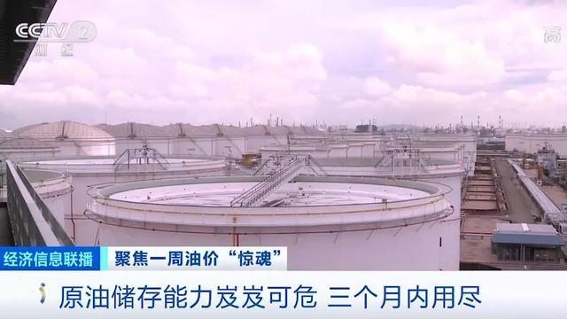

Global crude oil storage space will run out in three months！
According to the latest monthly report released by OPEC, global crude oil demand is expected to drop by 6.9 million barrels / day in 2020 year-on-year, and crude oil demand will drop to the lowest level in 30 years. Crude oil demand is falling precipitously, and there is not much space left for global crude oil storage. From Singapore to Cushing, Oklahoma, oil tanks are full of crude oil, gasoline and other products. The oil storage capacity of the Middle East is not optimistic. The United States, the world's largest oil producer, will soon run out of strategic crude oil reserves. S & P analysis estimates that the world's remaining storage capacity of crude oil and other energy is 1.4 billion barrels, including 1 billion barrels on land and 400 million barrels at sea. Even with full OPEC production cuts in mind, these storage spaces will be exhausted in two to three months.